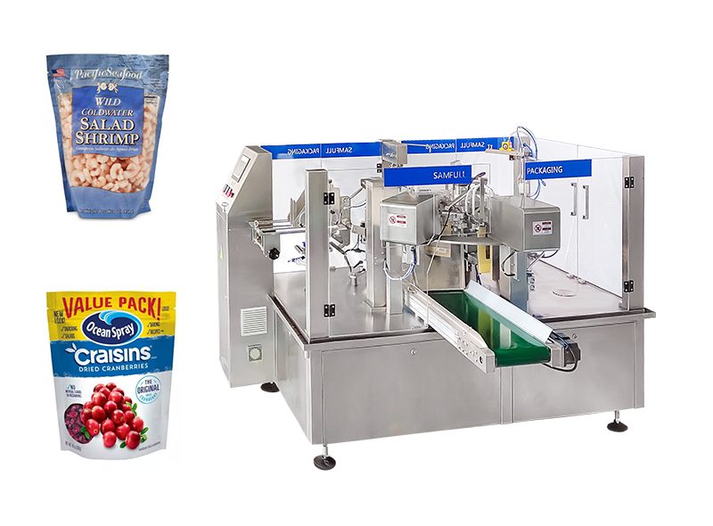

SKU: SAL-M-20
frozen food packing machine
| Sub-Category | Spices Processing |
| Brand | KMG |
| Model | FF-100 |
| Power | 220V / 50Hz |
| Material | Stainless Steel |
A frozen food packing machine is specially designed to pack food products that are stored at low temperatures, such as frozen vegetables, meat, seafood, and ready-to-eat meals.
These machines use packaging techniques like vacuum sealing or airtight sealing to preserve freshness and prevent contamination. They are built to handle cold conditions and maintain product quality, ensuring that frozen food remains safe during storage and transportation.
Frozen food packing machines are essential in the food industry because they help in extending shelf life, maintaining hygiene, and preventing freezer burn.
These machines use packaging techniques like vacuum sealing or airtight sealing to preserve freshness and prevent contamination. They are built to handle cold conditions and maintain product quality, ensuring that frozen food remains safe during storage and transportation.
Frozen food packing machines are essential in the food industry because they help in extending shelf life, maintaining hygiene, and preventing freezer burn.
Rate this product:
Click a star to submit your review